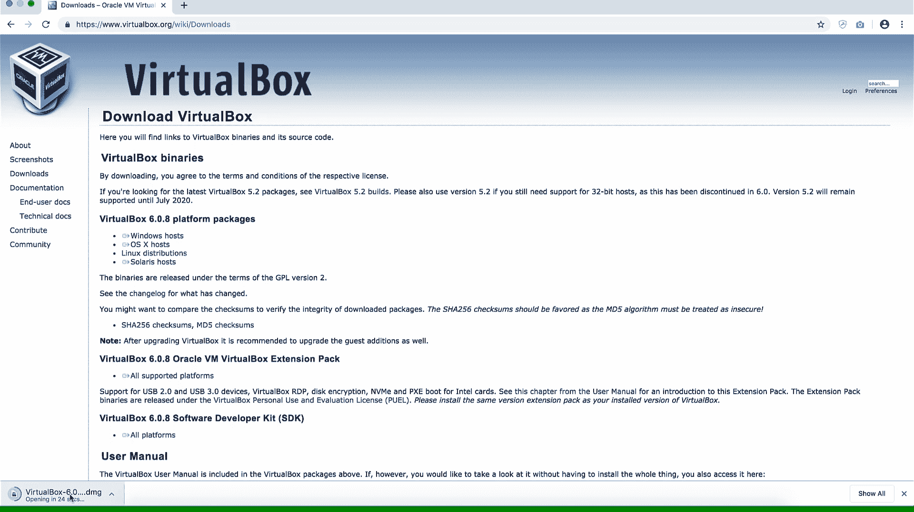
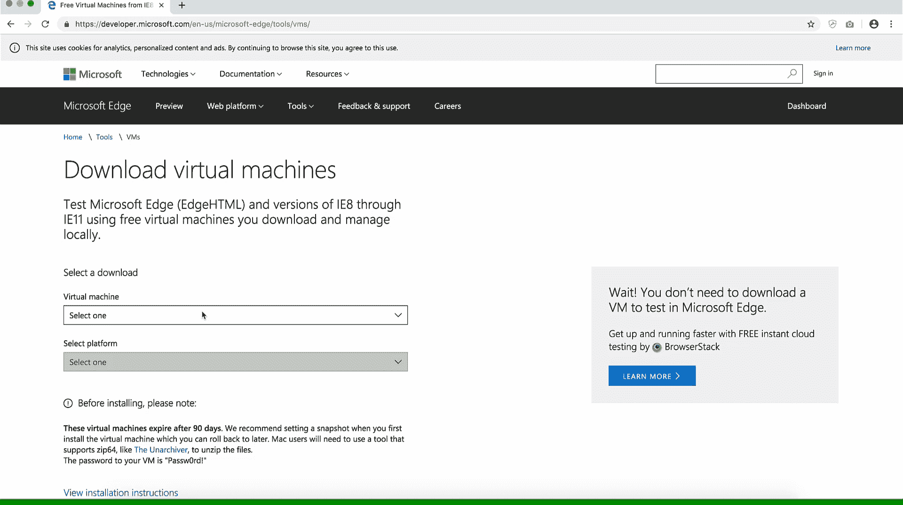
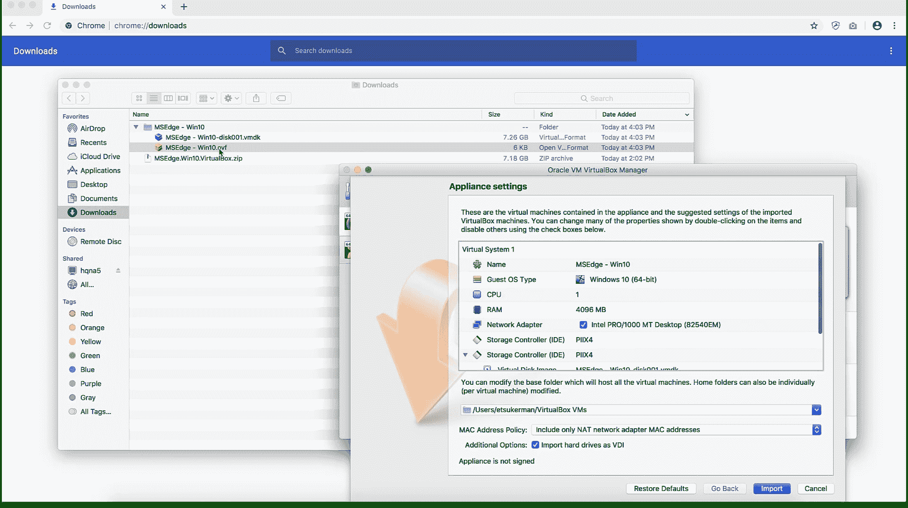
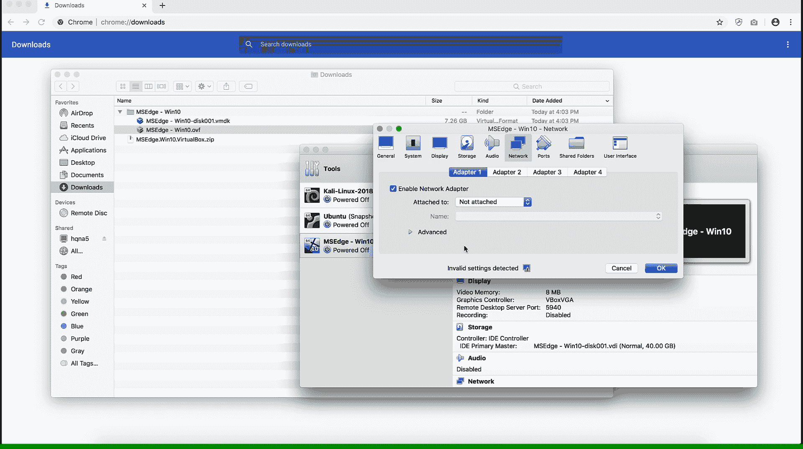
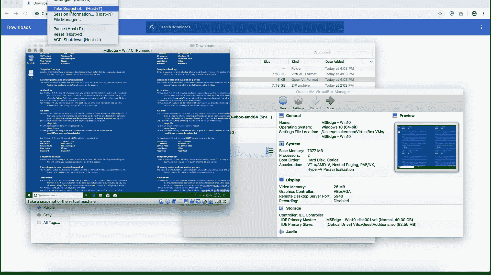
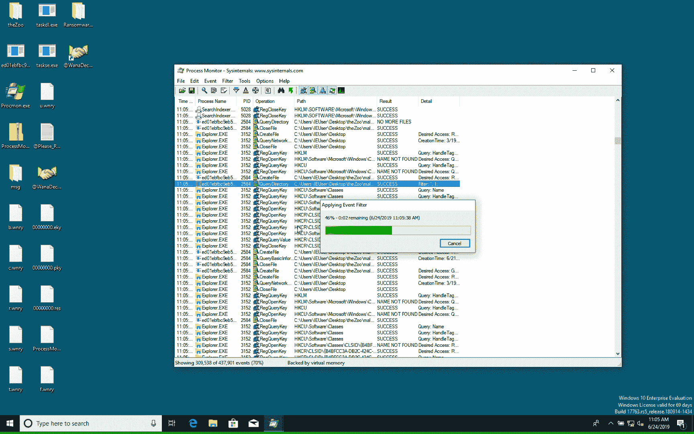
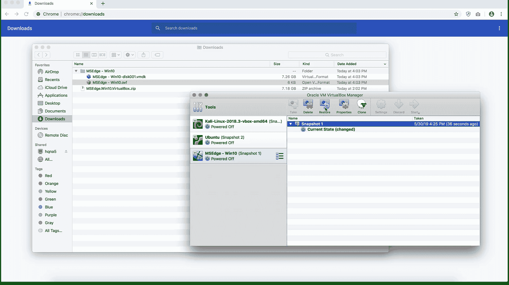

在这一章中，我们为读者提供了一个创建基础设施的指南，以应对机器学习对网络安全数据的挑战。特别是，我们提供了建立虚拟实验室环境的方法，以便进行安全有效的恶意软件分析。我们还提供了使用虚拟Python环境的指南，它允许用户无缝地在不同的Python项目上工作，同时避免包冲突。
本章将介绍以下配方:
为了保护您自己和您的网络，在处理和分析恶意软件时采取预防措施是非常必要的。最好的方法之一是建立一个隔离的虚拟实验室环境。虚拟实验室环境由隔离网络中的一个或多个虚拟机 ( 虚拟机)组成。隔离网络可以防止恶意软件在网络中传播，代价是恶意软件的行为不那么真实。
在准备此食谱时，请执行以下操作:
虚拟机管理程序是允许您控制虚拟机的软件。一个例子是VirtualBox，可以在https://www.virtualbox.org/免费下载:

虚拟映像是虚拟机的模板。可以在https://developer . Microsoft . com/en-us/Microsoft-edge/tools/VMs/找到几个Windows虚拟映像:

以下步骤将指导您设置和使用一个简单的虚拟实验室环境:
打开虚拟机映像时，您的屏幕应该如下所示:

以下屏幕截图显示了如何断开虚拟机与网络的连接:

您可以在这里查看允许您拍摄快照的菜单选项:

例如，我在我的虚拟机上运行勒索软件:

按下恢复按钮，如下所示:

我们从一个映像创建一个虚拟机开始这个方法(步骤1 )。虚拟机的创建取决于映像的格式。对于引用的虚拟映像，双击虚拟映像的.ovf文件将允许您设置一个虚拟机。其他时候，您可能需要创建一个全新的操作系统安装，然后挂载虚拟映像。接下来，在步骤2 中，我们为恶意软件分析配置了我们的虚拟机。您可能需要对配置进行一些更改。这些包括设置基本内存、处理器数量、视频内存和虚拟光驱；选择合适的网络设置；和创建共享文件夹。
完成后，在步骤3 中，我们保存了一个快照，这允许我们保存所有重要的状态信息。快照的优点在于，它允许用户轻松回滚对虚拟机所做的更改。因此，如果你犯了一个错误，没什么大不了的，只要恢复到以前的快照。接下来，在步骤4 中，我们引爆了虚拟机中的恶意软件。我们建议在这一步谨慎行事，只有在你知道自己在做什么的情况下才这么做。在这种情况下，您将在这本书的存储库中找到一个恶意软件数据集。最后，在步骤5 中，我们单击了VirtualBox中的Restore按钮，将我们的虚拟机回滚到您创建快照时的状态。
最后，我们注意到并相信亚西尔·阿里的以下建议:在macOS上安装VirtualBox时，用户应该为Adobe软件使用安全设置做出安全例外。
假设您有两个项目——项目A和项目B——它们的Python库需求冲突。例如，项目A需要scikit-learn版本0.21，而项目B需要scikit-learn版本> 0.22。或者一个项目需要Python 3.6，另一个项目需要Python 3.7。当您从一个项目切换到另一个项目时，您可以卸载然后安装适当的库或Python，但这可能会变得乏味且不切实际。为了解决需求冲突的问题，我们建议使用Python虚拟环境。在这个菜谱中，您将看到如何使用Python虚拟环境。
用于虚拟环境的模块venv包含在Python 3.3和更高版本的Python标准库中。
要创建和激活虚拟Python环境，请执行以下步骤:
python -m venv "name-of-your-environment"
source "name-of-your-environment"/bin/activate
在Windows上，运行以下命令:
"name-of-your-environment"/Scripts/activate.bat
我们从创建一个虚拟Python环境开始步骤1 。-m标志表示要使用的模块，在本例中是venv。接下来，在步骤2 中，我们激活了我们的Python环境，因此我们可以使用它并对其进行更改。请注意，Python环境的文件夹结构在Windows上不同于在Linux或Mac上。环境当前处于活动状态的指示是在终端中看到环境的名称，如下所示:
("name-of-your-environment")
在步骤3 中，您可以照常安装软件包，如下例所示:
pip install numpy
请放心，它不会影响您在这个环境之外的包。太棒了。